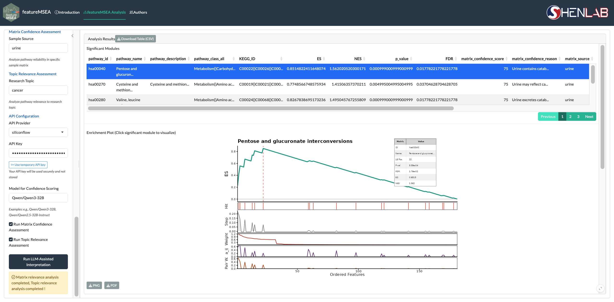
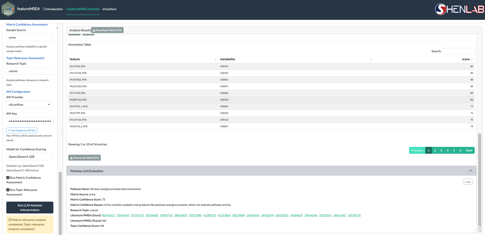

5 Analysis Results
After Step 2 completes, results appear in the Analysis Results panel on the right. The panel is driven by row selection in the significant modules table — clicking a row updates the enrichment plot, annotation table, and LLM evaluation panel below.
5.1 Significant Modules Table
The significant modules table lists all enriched metabolite sets that pass the FDR threshold. Each row contains:
| Column | Description |
|---|---|
| Pathway | Metabolite set name |
| NES | Normalized Enrichment Score — positive indicates enrichment among top-ranked features, negative among bottom-ranked features |
| p-value | Nominal p-value from permutation testing |
| FDR | Benjamini–Hochberg adjusted p-value |
Clicking a row triggers the panels below. The full table can be exported via Download Table (CSV).

Figure 5.1: Selecting a significant module renders the enrichment plot below the table
The enrichment plot shows the running enrichment score across the ranked feature list for the selected metabolite set. The peak of the curve marks the leading edge — the subset of annotated features most responsible for the enrichment signal. Export the plot via Download Plot (PNG or PDF).
5.2 Annotation Table and LLM Evaluation

Figure 5.2: Annotation table and Pathway LLM Evaluation panel
Annotation Table — lists the leading edge features for the selected metabolite set, showing feature-level annotation details for the compounds driving the enrichment. Export via Download Table (CSV).
Pathway LLM Evaluation — populated only after Step 3 completes. Displays the following fields for the selected metabolite set:
| Field | Description |
|---|---|
| Pathway Name | Metabolite set name |
| Matrix Source | Biological sample matrix provided in Step 3 |
| Matrix Confidence Score | LLM-assigned score (0–100) reflecting biological plausibility within the specified matrix |
| Matrix Confidence Reason | Reasoning behind the matrix confidence score |
| Research Topic | Research context provided in Step 3 |
| Literature PMIDs (Exact) | PubMed IDs from exact-match literature search — click to open in PubMed |
| Literature PMIDs (Fuzzy) | PubMed IDs from fuzzy-match literature search — click to open in PubMed |
| Topic Confidence Score | LLM-assigned score reflecting literature support for the metabolite set in the given research context |
If Step 3 has not been run, the LLM Evaluation panel does not appear.